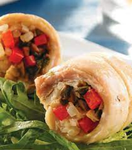
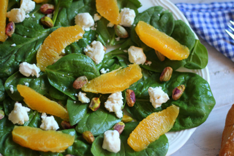

Recetas Saludables
Hoy en día la alimentación es indispensable para un sistema inmunológico saludable, por lo que cuidarlo y mantener una dieta saludable será de gran aporte para tu cuidado y un buen fortalecimiento del sistema para atacar a agentes infecciosos.
En este artículo te guiaremos con 2 recetas saludables y deliciosas que puedes preparar y no te llevara mucho tiempo con alimentos que te aportarán mucho al sistema inmunológico, quédate y conócelas a continuación:
Rollito Salmón Fit
Ingredientes
- Tortillas de trigo o masa de crepe
- 600 gr de filete de pescado blanco (sin espina) o salmón
- 1 pimiento verde
- 1 pimiento rojo
- 1/4 de cebolla
- 1 aguacate
- 2 tomates
- 1 puñado de cilantro o perejil
- Queso light
- 200 gr de yogurt natural
- 2 limones
- Sal
- Pimienta
- Aceite de oliva extra virgen
Preparación
- En una plancha rociar un chorrito de aceite de oliva y colocar los filetes de pescado o salmón cortados en cuadritos. Por encima agregar unas rodajas de limón, el jugo de ½ limón, una pizca de pimienta y una pizca de sal. Cocinar el pescado o salmón al vapor por aprox. 15 a 20 minutos.
- Mientras se cocina el pescado hacemos la ensalada: se debe cortar el tomate, los pimientos y la cebolla en trocitos muy pequeños y agregar a un recipiente. Cortar finamente un puñado de cilantro o perejil y agregar a la mezcla. Finalmente añadir el queso desmenuzado y aliñar con 1 chorrito de aceite de oliva y sal. Mezclar bien todos los ingredientes.
- Para la salsa de yogurt y aguacate: en un recipiente verter el yogurt natural y agregar el aguacate en forma de guacamole, una pizca de pimienta, sal y perejil picado finamente. Revolver muy bien.
- Una vez que esté listo la proteína, sacamos y ponemos todo en recipientes para poder armarlos o pasarlos a la mesa para que los comensales lo armen.
- Para el armado: Colocar una tortilla sobre un plato y rellenar con un par de cucharadas de pescado o salmón en cuadritos, un par de cucharadas de ensalada y 1 cucharada de salsa (si es de preferencia o puede ir aparte), una vez que todo este dentro se debe cuidar que la cantidad sea la adecuada para que se pueda cerrar el rollito. Para el doblez por la parte inferior y cerrar cuidadosamente los pliegues del lado derecho e izquierdo.
- Ya que el rollo esté armado se le puede pasar por la plancha para que la tortilla quede crujiente.
Ensalada con naranja, queso y pistachos
Ensalada para mejorar la salud con huevos, pasta, carne, verduras y pescados. Esta ensalada con naranja, queso de cabra y pistachos, aportan vitamina B1 y vitamina B6, riboflavina, vitamina E, vitamina K y ácido fólico.
Ingredientes
- 200 g de escarola
- 50 g de rúcula (sustituye escarola y rúcula por la lechuga que tengas)
- 2 naranjas
- 300 g de rulo de queso de cabra (rebaja calorías con queso fresco)
- 50 g de pistachos
- 5 cucharadas de aceite de oliva virgen
- 1 cucharada de vinagre de jerez
- Sal
- Cebollino (opcional)
Preparación
- Trocea, lava y seca la escarola. Lava y seca la rúcula.
- Corta una naranja y media en gajos y retira la piel. Exprime la mitad restante para extraer el zumo.
- Lava, seca y pica el cebollino.
- Pela y pica los pistachos.
- Prepara la vinagreta mezclando cuatro cucharadas de aceite con el vinagre, dos cucharadas de zumo de naranja, una pizca de sal y dos cucharadas de cebollino picado.
- Retira la corteza del rulo de queso de cabra, corta el queso en trozos, úntate las manos con aceite para formar bolitas y rebózalas con los pistachos picados.
- Reparte los ingredientes en los platos y aliña con la vinagreta.